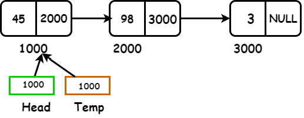
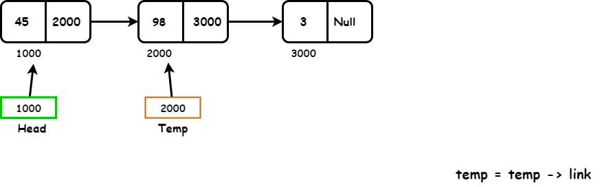
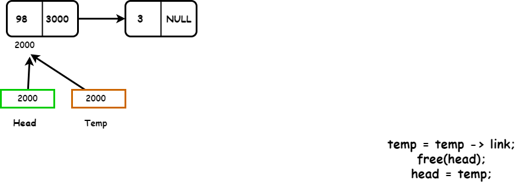
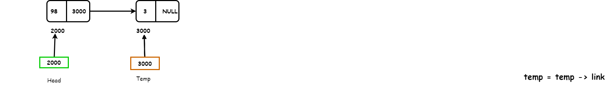
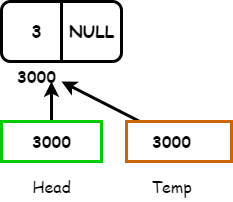

A Single Linked List is a data structure that consists of a list of nodes arranged in a forward direction, which means it cannot be placed in a backward direction. If the navigation is forward only, then it is called a single linked list.
A single-linked list is a list made up of nodes that consist of two parts.
Let's Take an example where we aim to store the list of numbers 45, 98 and 3 in a single linked list.
From this list if we successfully delete the first node, what about the other nodes? Once the first node is removed, It will lose direct access to the subsequent nodes. The only way to reach and delete the second node is through the link part in the second node. We can also use the head pointer, which holds the address of the first node. This structure helps us to navigate properly. We need to store the address of the second node somewhere so that we can reach the second node even if the first node is deleted. To reach the second node through some pointer.
That's why we use another pointer, temp, Which will store the address of second node after deleting the first node of this list. In this way, we are successfully maintaining the address of the second node and making it easy to continue.
Now initially, the temp, pointer of this list will move towards the right with the help of, the temp, link it can access the address 2000. We have a temp pointer pointing to the second node of the list, and we have a head pointer pointing to the first node of this list. Now we can easily delete the first node of this list using the free function. After deleting the first node, we should update the head pointer to point to the second node, which will be the new head of the list.
\ We need to repeat the process to delete the second node of this list. First, we would move out the temp from this side. After this, we would free the head with a free function then we would move the head into temp. Now the head is pointing to the third node of this list.
Then we have to repeat the process so that we can delete the last node as well. Then we will update temp by null using the free function to free this node.
We are repeating the following procedure until temp becomes NULL.
Therefore, we can use a while loop which runs the procedure until temp becomes NULL.Here the process complete